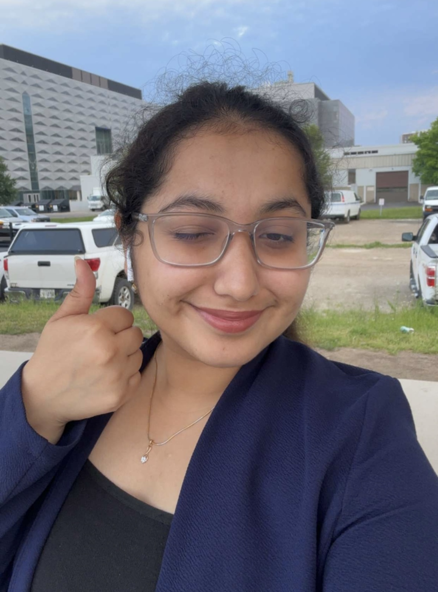
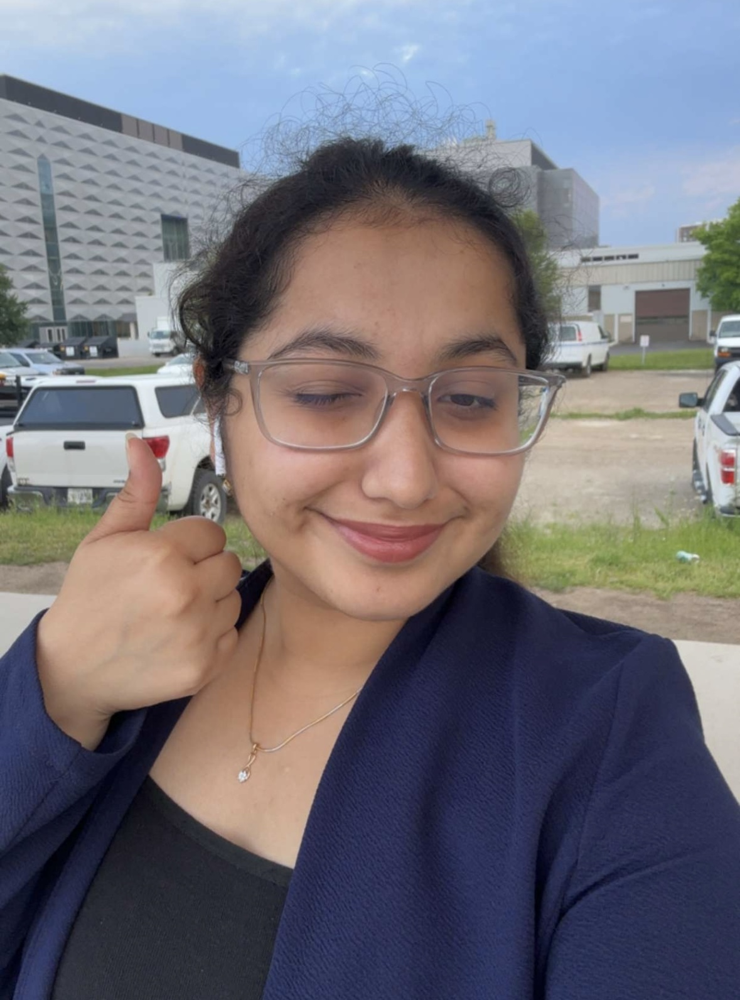
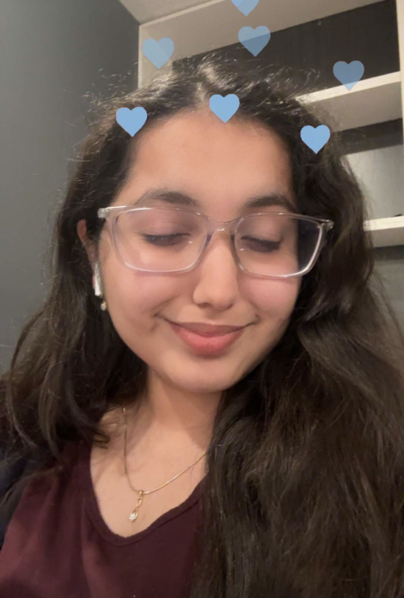
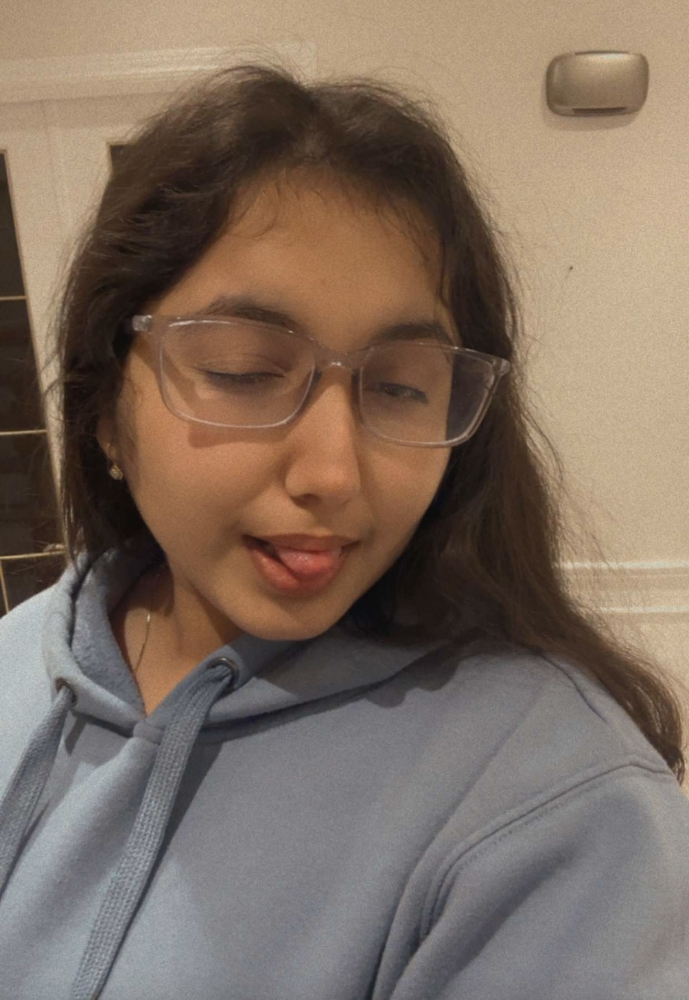
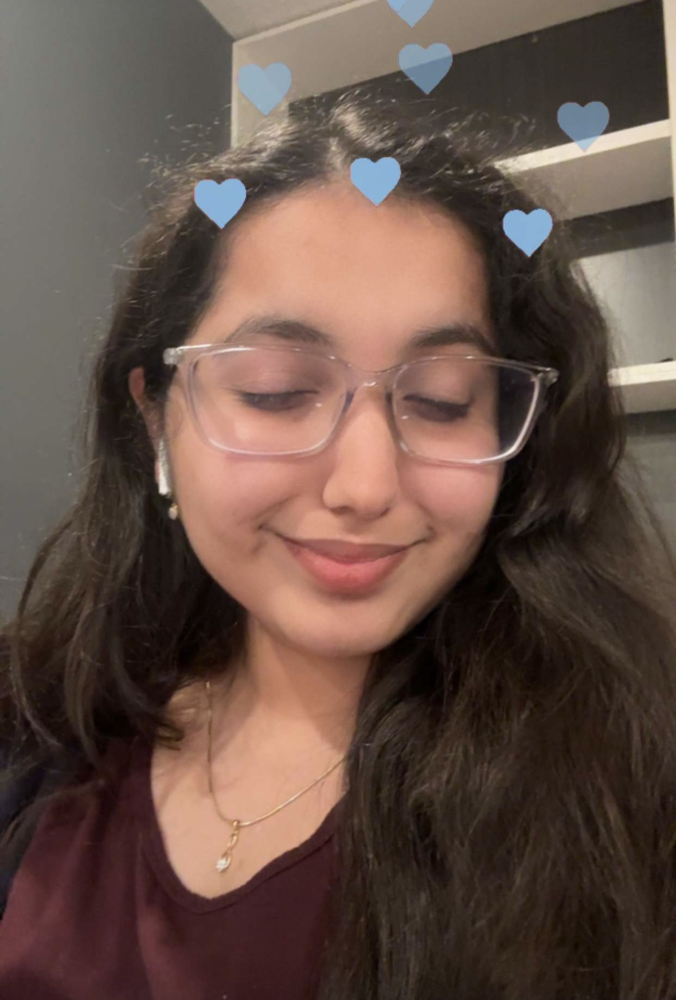
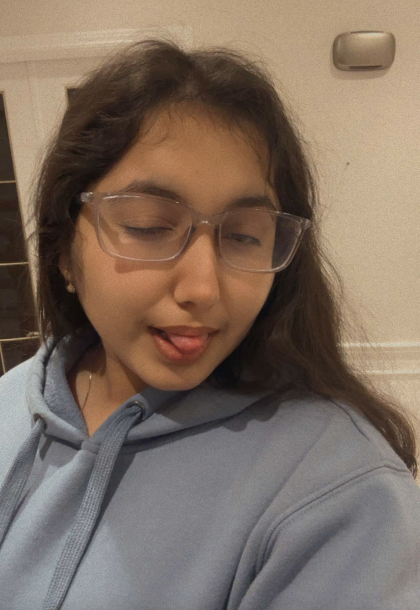

 



First of all happy birthday miss. I hope website achii lagi hoi.i tried different things in it learned some new stuff too bit ig execution utna acha nehii hua like okayish sii hai but i will work on it time kam thaa yaar varna aur better banti sorry uske liye. Idk start kaise karu but haa uk it mai toh poori hii kahaani sunaounga so yeah be ready hehe. So starting from last october i met u aur even tho aap itni hifi ho still we connected pretty well. Shuru mai toh mai dhyaan hii nehii deta thaa itna i just liked to hangout with u all guys together but idk jab ig midterms aaye yaa uske baad idk exactly kab but i realised ki enjoyed ur company the most when u used to say ki aaj u will be late to comeback and wont be able to meet and this moment is still inside my head like idont usually say zyaada but i said ki aajana jaldi kuch hota nehii tere bina like boring lagta. From this moment ig our bond together started forming like u and i started understanding each other and remember u were doing ur laundry and we talked about our families raat ko. That night is something which i will never forget too. I just liked how we got comfortable quickly with each other. The best thing about any bond is what i feel is everything should feel natural thats shows the purety of that bond. We both know each other so well and i feel in this life thingy naah there should always be one person with whom u can be urself, share anything and the other person should understand and listen to u thats it because in this world naah people are not ready to listen and understand other people (i m also not good at this) If u find one such person then never ever leave them thats what i feel. Moving on with our story then came the day when we got out for a walk raat mai iknew something is wrong with u something is bothering u and i kept on saying navya tell me i can sense it but u said all is fine dw. Then we got back at our respective rooms then i texted u ki there is something which i want to ask to u for one last time and u replied meet me at slc there is something which u want to share as well and then we met that convo happened. Another day which i will never forget. Phir kuch din gaye then came the final exam idk u remember or not we had a discussion again during the exam period about family and all again it was 5 min break but turned into an hour long. Uske baad exams hue and then u left and everytime jab bhi tujhe bye bolna hota thaa whether it was term break u leaving hostel or just dropping u off near ur home that was something which was the hardest idk kyu i just feel alone even tho ankit hota saath mai but when i m with u then everything seems good and all but jo bhi hai then result thingy happened u started takin stress aur tension hone lagii. Pta hai uss time pe jab bhi tu apni koi problem btati thii naah toh uska solution sochne ke chakkar mai i used to go out for a walk for an hour or two raat mai then i used to text before going to bed sometimes i used to take ankit too. I remember one day idk tujhe yaad hoga ki nehii ek baari i told u about amolika like she wrote something jisse tujhe gussa aagaya thaa uss time bahot and were all worked up aur text pe text likhe jaari thii how u were angry and all and idk but u were angry cuz u felt that ki i might get influenced by her words and all idk tab i felt ki i was important u idk. I have this weird craving of being idk someone’s priority idk like being important to someone u made me feel that day thank u for that. We met again campus pe idk if u remember ache se or not but there was one day jab mai tu aur ankit mile thee SLC mai and idk u were angry with me for some reason like mujhse dhang se baat nehii kar rahii thii and uss din when u were leaving for ur home ankit forced me to drop u off (thanks to ankit) we talked phir idk jaha hamesha tujhe chodta park saa hai jaha swings hai waha we talked for a few minutes idk about what but i just remember that moment its just felt good. Jo bhi hai u tried to resolve the issue but nothing worked still remember ache se when we were watching that doreamon movie u were biting ur teeths and i just put my hand on ur mouth to stop whole time. Then that thingy happened academic standing waali and u had a breakdown uske baad u went to ur room i didn’t want to leave u uss raat idk i just felt i should be with u next day things didn’t turn out according to our plan and ur parents came suddenly to pick u and u left i remember it was so sudden i was grabbing food for us and then came ur parents once again u left and idk (fun fact:- idont cry zyaada on things) i cried a lot uss raat ko cuz idk when we will meet next and how will be u. Then we started talking on discord daily it felt good to talk to u (not a texting person) aise hii chalta reha and u called us one day video call usmai i could see from ur eyes that u were crying usse pahle idk i just felt i was responsible for all of that at that time i thought i was helping u through those texts and all but jo bhi hai we fought ig uss din but still kuch der baad we started talking time passed and. i liked how we used to motivate each other. Uske baad u started coming to campus and i liked ur surprise of that too and i tried to meet u harr din jab jab tu aaye tabhi we used to talk discord pe i remember last mai hum kitni baatein karte thee for like hours and pta hii nehii chalta thaa time kaise chala jaata thaa. I remember after ig my cs exam u said ki u will be deleting discord and all social media and dont know kab tak ke liye that was also a shocker cuz uk by that time u were my habit i was used tok of taking to u for hours and its my happy time but still tune vo nehii kiya we continued to talk and then came the day when we had to go to india (i miss u) that day i just kept on looking on time i just wanted it to slow down like wanted to be with u but that didn’t happen time went by quickly and then i remember i hugged u before going i controlled my rona uss time pe u got emotional too but still thoda time hua thik lagra thaa but then came when we were entering flight and i started missing u again was in tears thinking about u + uk my fear of flights too so yeah was thinking about u poore flight ke time. We decided we will manage to talk to each other daily and we did that abu dhabi mai then i came to india result bhi aagaya thaa idk i was just going through bad phase and u were coming back to uni and was busy with all internships starting mai we didn’t talk zyaada and ekdum se i bursted on u and we had an argument a big one this time but sab sort hogaya idk i didn’t understand certain things at that time but phir uske baad se i decided ki ab maire end se kabhi ladhai nehii hogi and then came the person whose name shall not be taken idk i just felt ajeeb being compared to him and all. I just dont like him and idk wahii ajeeb lagta thaa whenever u used to compare us but jo bhi hai uske baad i remember humari time to time choti moti ladhai hoti hii rehti thii but all used to get sorted aaram se ohh haa just yaad aaya ki how u just disappeared all of a sudden when we were in canada raat ko remember that was some night like tu toh gharpe thii mai pagal hogaya thaa soch soch ke i was calling everyone and was in so much stress aisa chalta rha and mai hanuma chalisa laga kar soya mushkil se subah uthke i called u still nehii uthaya i talked to papa he calmed me down and then after few minutes u texted then i felt relieved jo bhi hai. Its just that i expect a text from u daily like its just weird u not texting me ekdum se idk. Jo bhi hai back to present time idk i feel distance nowadays like there is certainly distance between us abhi canada india but idk u get it or not. Khair keeping that aside happy birthday take care of urself and be happy always do achieve everything that u want and please do take care of ur health don’t take it lightly.
Hi there, Happy 20th birthday!! Hope aaj ka din perfect ho tera, anyways I would also like to write down a short story like naman going through our history(although utna bada para toh nahi likh paunga). Pehle mai jab uni mai aaya tha toh I didn’t really know a lot of people, bas momo ko hi janta tha and uske hi basis pe baki logo se dost banata tha (and you know kaisa insaan hai vo) phir ek din s8 ke lounge mai tere se mila and tabse tu hi meri pehli dost hai university mai uske baad se jab mai tu naman khushi sadaan bhaiya aaye the lounge mai tabse we all clicked and har dusre din lounge mai maze karte the ham log phir uske baad near the end of fall term and start of winter ke beech mai kaafi stress chal rahe the sab and phir tere jaane ke baad sab kaafi dukhi thi uske baad jab se tera phirse aana start hua tab thoda happy atmosphere hua and I still do feel guilty about not coming jab tu aati thi phir mere birthday ke time even when it was my first time being away from family tum log ne aisa feel nahi hone diya. Anyways, ye 4 mahine mai kaafi distant sa raha hu and im sorry for that. Anyways, that’s enough about me, Happy birthday again and many happy returns of the day.